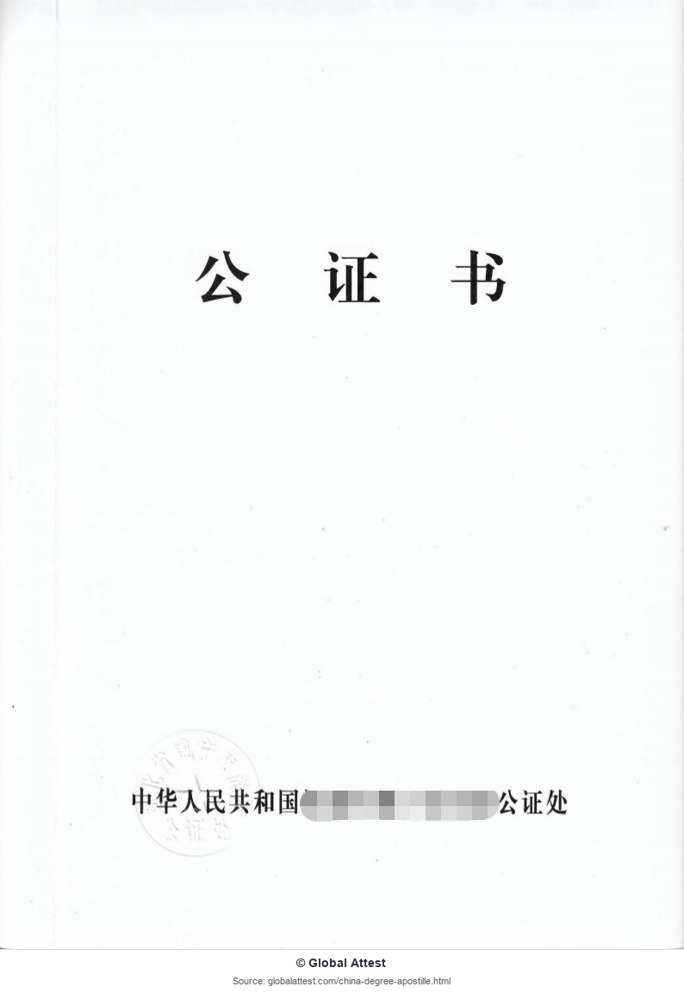
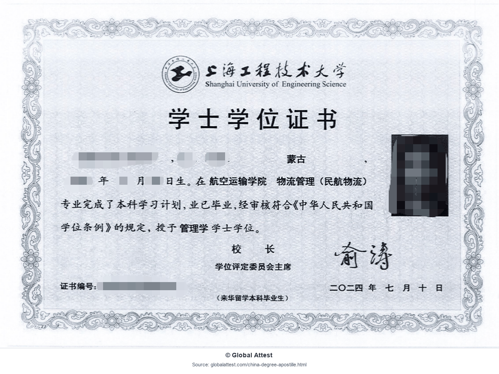
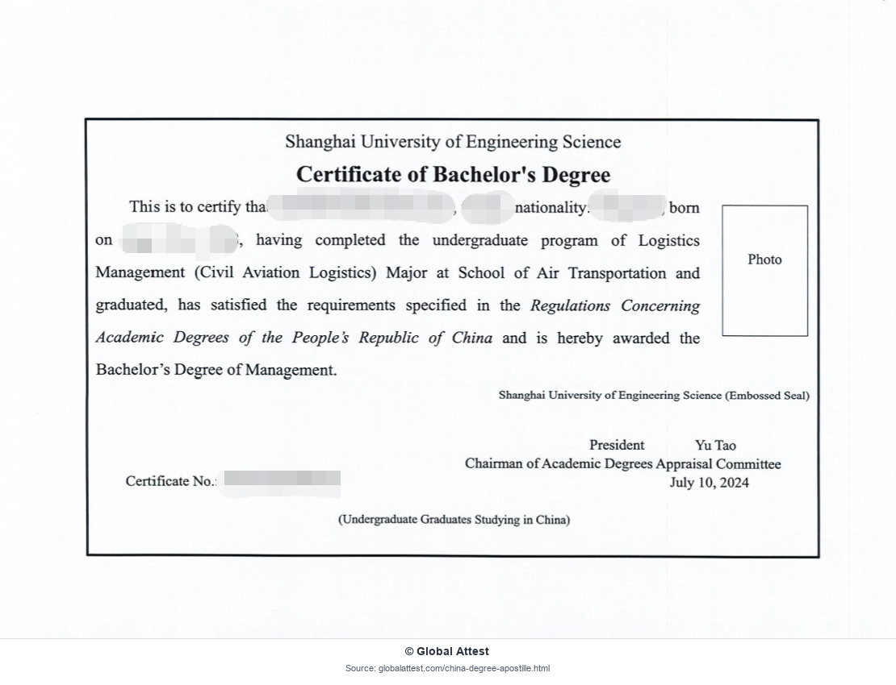
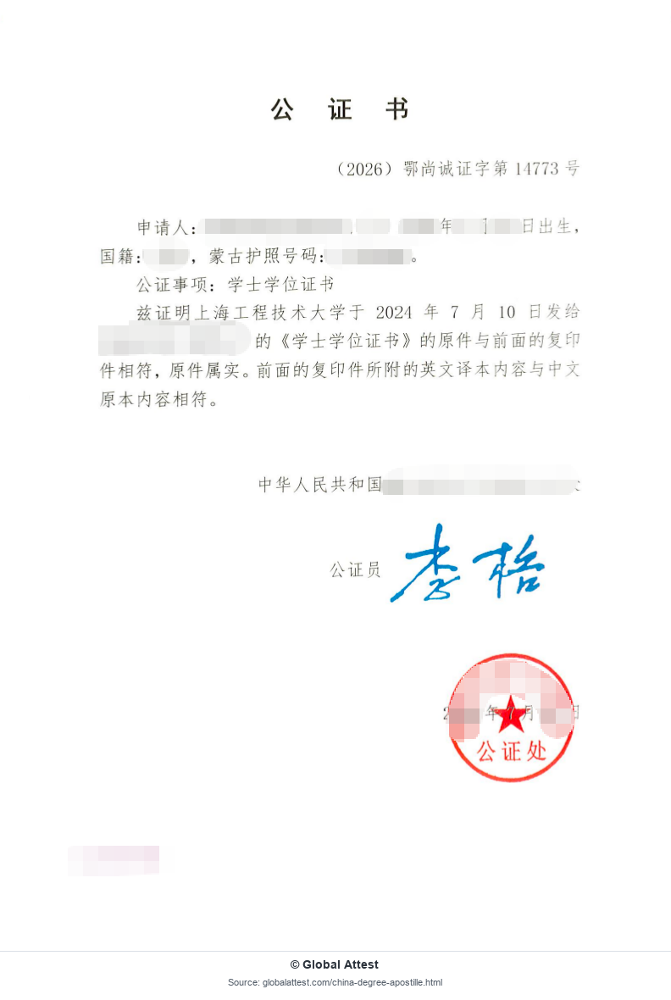
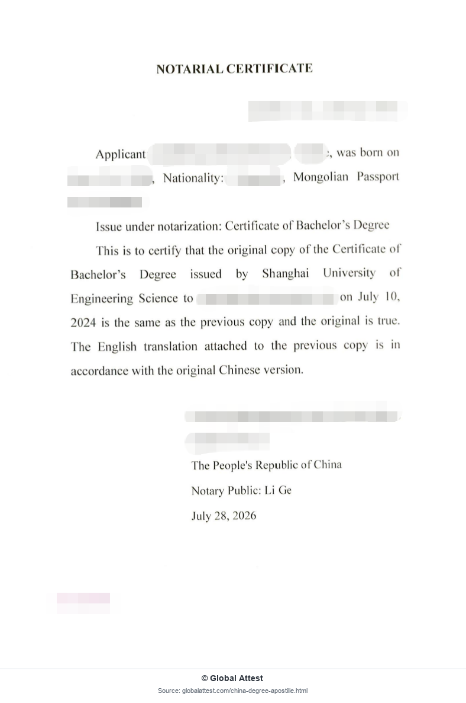
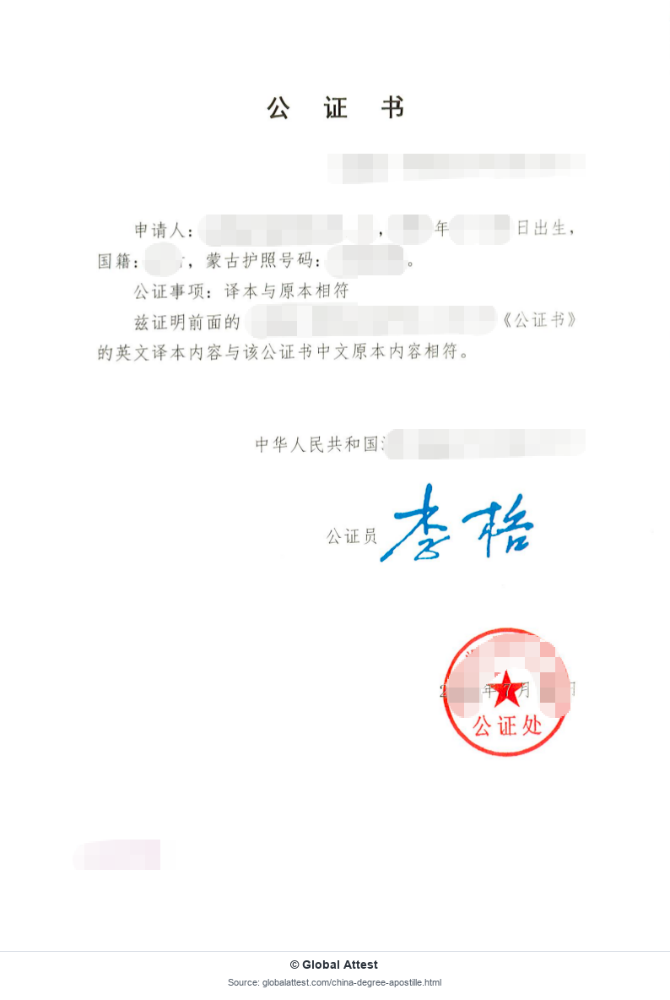
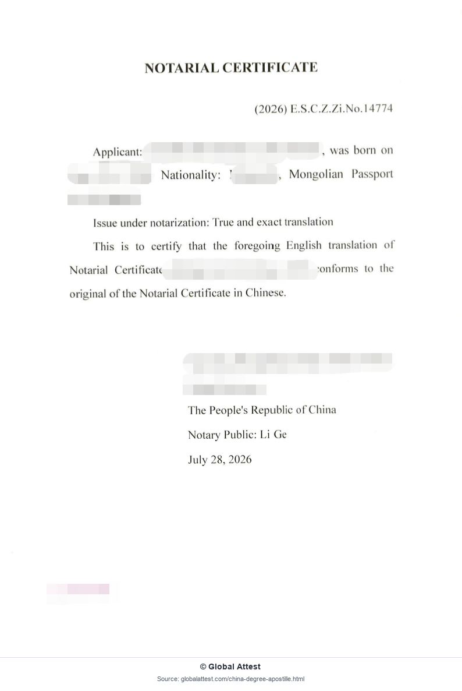
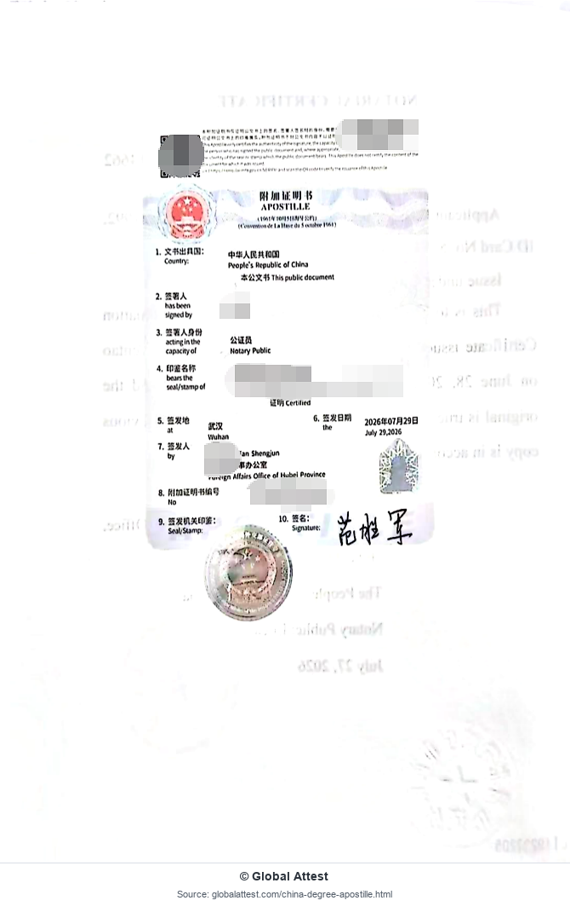

Degree and Graduation Documents
- Degree Certificate
- Graduation Certificate
- Diploma
Professional assistance with apostille, notarization, translation and document preparation for Chinese degrees, transcripts and other academic records intended for international use.
Request a Document ReviewA China degree apostille is an authentication certificate used when an eligible Chinese academic document will be presented in a country or territory that accepts the Hague Apostille Convention route. It generally authenticates the relevant signature, seal, stamp or official capacity attached to the public or notarized document.
An apostille does not verify the academic qualification itself and does not confirm that every statement in the underlying document is true. The receiving organization determines whether an apostille, degree verification, translation, notarized copy or another document format is required.
A degree apostille may be requested when a Chinese academic document is submitted for overseas employment, professional licensing, university admission, immigration, company compliance or another international purpose. It is generally relevant only when the destination and receiving authority accept the apostille route for that document and use.
Eligibility and preparation depend on the document, issuing institution and receiving authority.
These processes serve different purposes and should not be treated as interchangeable.
Verification checks information about the credential, institution or study record through an appropriate academic verification source. It is used to confirm academic information rather than authenticate a document's official signature or seal.
An apostille authenticates the relevant signature, seal, stamp or official capacity connected with an eligible public or notarized document. It does not replace academic verification when the receiving organization requests verification separately.
The exact sequence may vary depending on the document and authority.
Check the destination country, intended use and receiving authority's instructions.
Identify the academic record, issuing institution and available original or copy.
Determine whether notarization, a certified copy or supporting verification is needed.
Prepare a certified or notarized translation when the recipient requires one.
Submit the eligible public or notarized document through the applicable channel.
Review visible certificate details before arranging document return or delivery.
Some academic documents may need notarization or an acceptable notarized copy before an apostille can be issued. Translation is a separate requirement and is not automatically included in the apostille certificate.
The receiving organization may request a certified translation, notarized translation or a specific language and format. The correct sequence depends on the academic document, destination and submission instructions.
The estimated processing time may vary depending on the document type, issuing location, notarization and translation requirements, authority review and whether additional records are requested.
Public holidays and courier delivery may add time. After reviewing the case, Global Attest can provide an estimated schedule, but the final timeline remains subject to the relevant authorities.
These eight redacted pages show a degree document, its translations and notarial certificates, and the accompanying China apostille. Select any image to open the full-size version.








These redacted sample images were prepared and published by Global Attest for reference purposes.
You may reference these images for informational purposes provided that:
Commercial redistribution is prohibited without permission.
© Global Attest — image scan, redaction, arrangement and publication. Underlying document rights remain with their respective issuing authorities or rights holders.
Use these focused pages to understand the relevant service, verification or document route.
Review apostille assistance for eligible personal, academic and commercial Chinese documents.
View additional certificate examples and common apostille details.
Learn about verification of Chinese degrees and academic transcripts.
Understand CHSI and CSSD academic verification reports and terminology.
Review apostille, legalization, notarization and translation support.
Understand when embassy or consular legalization may be required.
Prepare Chinese degree and transcript documents for WES evaluation.
A China degree apostille is an authentication certificate used when an eligible Chinese academic document will be presented in a destination that accepts the Hague Apostille Convention route. It generally authenticates the relevant signature, seal or official capacity attached to the document. It does not verify the academic qualification itself or guarantee acceptance by the receiving institution.
Degree certificates, graduation certificates, diplomas, academic transcripts, enrollment or attendance certificates and professional qualification certificates may be eligible. The correct preparation depends on the document, issuing institution, administrative region and destination requirements. Some documents may need notarization, an acceptable certified copy or supporting verification before the apostille step can begin.
No. Degree verification checks information about the academic credential, institution or study record through an appropriate verification source. An apostille authenticates a relevant signature, seal or official capacity on an eligible public or notarized document for international use. A receiving authority may request one process, both processes or additional documentation, depending on its purpose.
Notarization may come first when the original academic document is not itself eligible for a direct apostille route or when the receiving authority requests a notarized document or certified copy. Other documents may follow a different sequence. The correct order depends on the document type, issuing authority, destination country and receiving organization's instructions.
Translation is a separate service and is not automatically included in an apostille. The receiving organization may request an English or destination-language translation, a certified translation or a notarized translation. Translation timing can also vary by procedure. Global Attest can coordinate suitable translation preparation after reviewing the document and the recipient's instructions.
The estimated timeline may vary depending on the academic document, issuing location, notarization needs, translation, authority review and whether additional records are requested. Public holidays and courier delivery can add time. After reviewing the available documents and destination requirements, Global Attest can provide an estimated schedule, but processing remains subject to the relevant authorities.
In some cases, an academic document apostille can be coordinated after the holder has left China through an authorized representative or document assistance process. Availability depends on the original document, issuing location, notarization requirements and local authority rules. Original documents, identification or authorization materials may be required, and not every part of every case can be completed remotely.
WES document requirements depend on the evaluation type, credential, issuing institution and current submission instructions. An apostille should not be assumed to replace degree verification, transcript delivery or other WES requirements. Applicants should check the latest WES instructions for their case and prepare the academic documents in the exact format and submission channel requested.
Global Attest is an independent document assistance provider. Final document acceptance depends on the receiving authority. Apostille, notarization, translation and academic document requirements may vary by destination, document type and receiving organization.
Request a Document Review